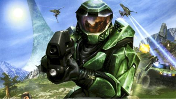

Martin O’Donnell y Michael Salvatori: Maestros de la Música en Videojuegos
En el mundo de la música para videojuegos, pocos nombres resuenan con tanta fuerza como los de Martin O’Donnell y Michael Salvatori. Estos dos compositores han dejado una huella indeleble en la industria, creando algunas de las bandas sonoras más memorables y emocionantes que han acompañado a los jugadores en sus aventuras virtuales.
Martin O’Donnell, nacido el 1 de mayo de 1955 en West Chester, Pensilvania, comenzó su carrera musical escribiendo jingles comerciales para radio y televisión, así como componiendo para el cine. Su talento pronto lo llevó al mundo de los videojuegos, donde se unió a Bungie Studios y se convirtió en una figura clave en la creación de la banda sonora de la serie Halo. Su música no solo capturó la esencia de la épica ciencia ficción del juego, sino que también elevó la experiencia de juego a un nivel artístico.
Michael Salvatori, nacido en 1954 en Elmhurst, Illinois, se asoció con O’Donnell después de que ambos se conocieran en la universidad. Juntos formaron una sociedad que culminaría en la creación de TotalAudio, su propia compañía de producción. Salvatori, con su dominio del piano y la guitarra, complementó perfectamente la visión musical de O’Donnell, y juntos crearon bandas sonoras que definieron una era.
El mayor éxito de esta colaboración fue, sin duda, la trilogía Halo. La música de O’Donnell y Salvatori para Halo se convirtió en icónica, con temas que evocaban tanto la grandeza del espacio como la intimidad de los momentos más tensos y emotivos del juego. La banda sonora de “Halo 3” alcanzó un éxito comercial sin precedentes, convirtiéndose en la banda sonora de videojuego más vendida de todos los tiempos.
Más allá de Halo, O’Donnell y Salvatori también trabajaron en la música para otros proyectos de Bungie, incluyendo la serie Myth y el juego Oni. Incluso después de que O’Donnell dejara Bungie, Salvatori continuó componiendo música para la franquicia Destiny, llevando su talento a nuevas generaciones de jugadores.
La música de O’Donnell y Salvatori no es solo un acompañamiento para los juegos; es una parte integral de la narrativa y la atmósfera. Sus composiciones invitan a los jugadores a sumergirse completamente en los mundos que exploran, creando una conexión emocional que perdura mucho después de que el juego ha terminado.
VIDEO
Participacion En...
Soundtrack

Halo: Combat Evolved, comúnmente conocido como Halo CE, es un juego que marcó un antes y un después en el género de los shooters en primera persona. Lanzado originalmente para la consola Xbox en 2001, este juego no solo destacó por su innovador gameplay, sino también por su rica narrativa y su mundo inmersivo.
En Halo CE, te pones en la armadura del Jefe Maestro, un supersoldado genéticamente mejorado, y te embarcas en una misión para descubrir los secretos de Halo, un misterioso mundo artificial con forma de anillo. Acompañado por Cortana, una inteligencia artificial avanzada, luchas contra una alianza de razas alienígenas conocida como el Covenant.
El juego es conocido por su acción intensa, la posibilidad de conducir una variedad de vehículos, desde jeeps blindados hasta naves alienígenas, y por sus escenarios tridimensionales detallados. Además, Halo CE introdujo mecánicas de juego que se convirtieron en estándares para los FPS, como el sistema de regeneración de escudo y la limitación en el número de armas que se pueden llevar al mismo tiempo.
La edición de aniversario de Halo CE, lanzada para conmemorar su décimo aniversario, trajo gráficos remasterizados y la posibilidad de cambiar entre la versión clásica y la actualizada con solo presionar un botón, permitiendo a los jugadores experimentar el juego con una nueva capa de pintura o en su forma original.
Es un juego que no solo entretiene, sino que también transporta a los jugadores a un universo de ciencia ficción profundo y bien construido, donde cada victoria se siente épica y cada descubrimiento aporta más a la rica lore de la saga Halo.
Halo 2 es un juego que llevó la experiencia de su predecesor, Halo: Combat Evolved, a nuevos horizontes. Lanzado en 2004, es un videojuego de disparos en primera persona que continúa la épica saga del Jefe Maestro y su lucha contra la alianza alienígena conocida como el Covenant.
En Halo 2, la historia se profundiza y se expande el universo de Halo. El juego comienza con la Tierra bajo amenaza después de la victoria pírrica de la humanidad sobre el Halo. El Covenant lanza un ataque sorpresa contra la Tierra, y el Jefe Maestro se ve envuelto en una nueva batalla para salvar a la humanidad.
Una de las innovaciones más notables de Halo 2 fue su multijugador en línea, que estableció un nuevo estándar para los juegos de consola. Permitió a los jugadores de todo el mundo conectarse y competir o colaborar en emocionantes batallas. Además, el juego introdujo la posibilidad de jugar como un Élite del Covenant, ofreciendo una perspectiva diferente dentro del conflicto.
La edición Anniversary de Halo 2, parte de Halo: The Master Chief Collection, trajo gráficos remasterizados y la opción de alternar entre los gráficos originales y los actualizados, lo que permitió a los jugadores disfrutar de las mejoras visuales sin perder la esencia del juego original.
Halo 2 no solo es recordado por su jugabilidad y su impacto en el multijugador en línea, sino también por su banda sonora y su narrativa envolvente, que capturaron la imaginación de los jugadores y los sumergieron en una experiencia de ciencia ficción inolvidable.
Halo 3 es la tercera entrega de la icónica serie de videojuegos Halo, y representa el clímax de la trilogía original. Lanzado en 2007 para la consola Xbox 360, Halo 3 es un juego de disparos en primera persona que sigue las aventuras del Jefe Maestro, un supersoldado cibernéticamente mejorado, en su lucha contra la alianza alienígena del Covenant.
La historia de Halo 3 retoma donde lo dejó Halo 2, con el Jefe Maestro regresando a la Tierra para enfrentar una invasión del Covenant. El juego es aclamado por su emocionante campaña, que puede ser jugada en modo cooperativo hasta por cuatro jugadores, y por sus modos multijugador competitivos, que son una piedra angular de la experiencia de Halo.
Una de las características más destacadas de Halo 3 es su editor de niveles Forja, que permite a los jugadores crear y compartir sus propios mapas y modos de juego, lo que ha contribuido a una comunidad vibrante y creativa. Además, el juego introdujo nuevas armas, vehículos y mecánicas de juego, así como una mejora en los gráficos y la jugabilidad en comparación con sus predecesores.
Halo 3 también fue notable por su impacto en el mundo de los eSports y por tener una de las comunidades en línea más activas de su tiempo. La Master Chief Collection, lanzada posteriormente, incluyó una versión remasterizada de Halo 3, permitiendo a los jugadores disfrutar del juego en PC con gráficos mejorados y otras optimizaciones.
En resumen, Halo 3 no solo concluyó la historia épica del Jefe Maestro de manera satisfactoria, sino que también estableció nuevos estándares para los juegos de disparos en primera persona y dejó un legado duradero en la cultura de los videojuegos.
Halo: Reach es una experiencia de juego que combina acción intensa con una narrativa profunda y emotiva. Lanzado originalmente para Xbox 360, y más tarde disponible para PC, este título es una precuela de la serie Halo y cuenta la historia de la Caída de Reach, un evento crucial en el universo Halo.
En el juego, te unes al Equipo Noble, un grupo de valientes soldados Spartan que luchan contra todo pronóstico para defender el planeta Reach de la invasión del Covenant, una alianza de razas alienígenas. Asumes el papel de Noble Six, un Spartan recién integrado al equipo, y te enfrentas a misiones que pondrán a prueba tu habilidad y determinación.
Halo: Reach se destaca por sus épicas batallas contra enemigos brutales y por ofrecer una amplia gama de armas y vehículos para combatir en diversos y detallados entornos. Además, el juego no incluye mecánicas de escuadrón táctico, lo que significa que, aunque el Equipo Noble acompaña al jugador durante la mayor parte de la aventura, no se puede interactuar con ellos como en otros juegos de estrategia.
La versión para PC de Halo: Reach ha sido optimizada y mejorada, ofreciendo soporte para resoluciones 4K ultrawide, mayores tasas de fotogramas por segundo y otras configuraciones nativas de PC como soporte para ratón y teclado, compatibilidad ultrawide y personalización del campo de visión (FOV).
La historia de Halo: Reach es trágica y heroica, mostrando el gran sacrificio y coraje del Equipo Noble, que salva innumerables vidas frente a probabilidades imposibles. El juego no solo es un shooter en primera persona, sino también una experiencia que te sumerge en el sacrificio y la valentía de aquellos que lucharon en uno de los momentos más oscuros del universo Halo.
 COMPOSITORES FAVORITOS
COMPOSITORES FAVORITOS